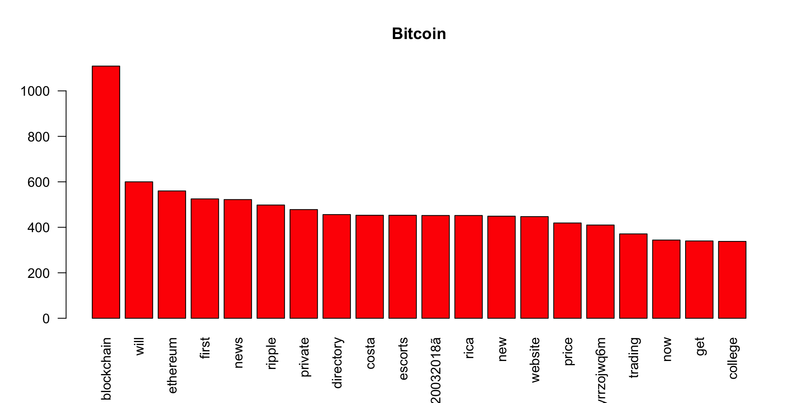
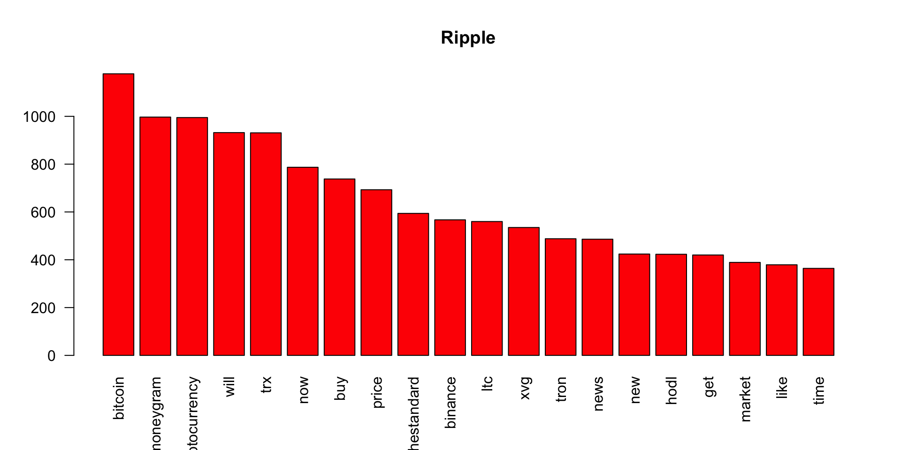
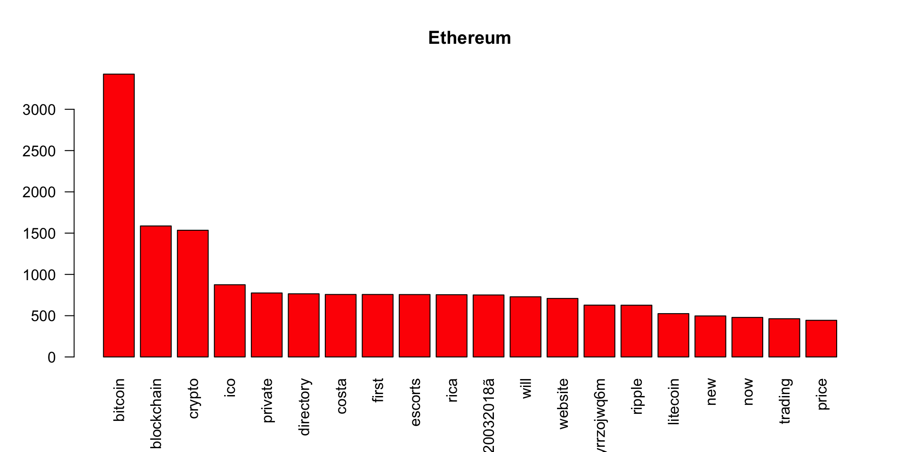
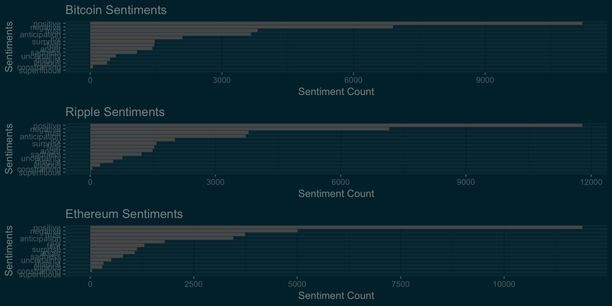
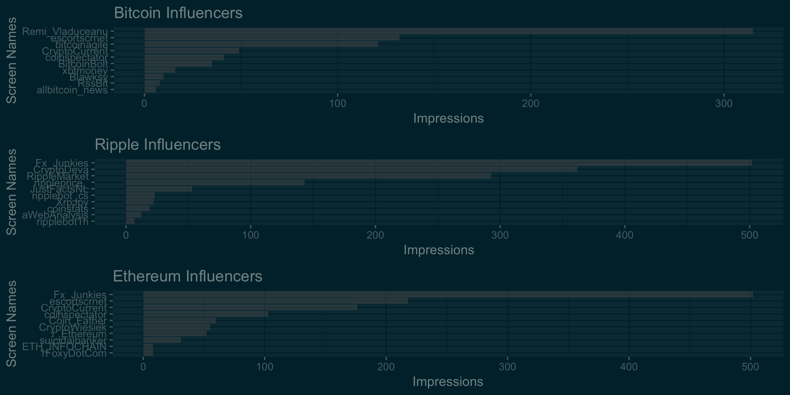

knitr::opts_chunk$set(echo = TRUE)There has been so much buzz about Crypto Currencies and their long-term validity these days. The world has been divided on the credibility of the Crypto Currency as an authentic investment. Some countries have even gone to the extent of banning the trade of Crypto Currencies. Let’s explore what Twitterati think about this phenomenon.
Based on the data available at Cryptocurrency Market Capitalizations, top three Crypto Currencies with highest market capitalization were selected for analysis.
Following three Crypto Currencies were selected-
Following is the list of packages that are required for analysis of the Twitter data.
library(twitteR)
library(dplyr)
library(tm)
library(wordcloud)
library(tidytext)
library(tidyverse)
library(sqldf)
library(ggplot2)
library(ggthemes)
library(data.table)
library(gridExtra)In order to extract twitter data, we need to connect to Twitter API and send Tweet extract requests. Details about getting the consumer_key, access_token can be found here
For the purpose of confidentiality, my twitter API authentication details have been removed.
## Connecting to Twitter API
# consumer_key<-'xxxyyyzzz'
# consumer_secret<-'xxxyyyzzz'
# access_token<-'xxxyyyzzz'
# access_token_secret<-'xxxyyyzzz'
# setup_twitter_oauth(consumer_key, consumer_secret, access_token, access_token_secret)
# bitcoin = twitteR::searchTwitter('#bitcoin -filter:retweets',lang = "en", n = 5000, since = '2017-12-24',
# until = '2017-12-31',retryOnRateLimit = 1)
# d = twitteR::twListToDF(bitcoin)
# write.csv(d,"bitcoin.csv")
# ripple = twitteR::searchTwitter('#ripple -filter:retweets',lang = "en", n = 5000, since = '2017-12-24',
# until = '2017-12-31',retryOnRateLimit = 1)
# d = twitteR::twListToDF(ripple)
# write.csv(d,"ripple.csv")
# ethereum = twitteR::searchTwitter('#ethereum -filter:retweets',lang = "en", n = 5000, since = '2017-12-24',
# until = '2017-12-31',retryOnRateLimit = 1)
# d = twitteR::twListToDF(ethereum)
# write.csv(d,"ethereum.csv")I have already extracted the tweets with the above criterion in CSV files. Let’s load those files for our analysis.
# for now, we will just concentrate on the text of tweets
bitcoin<-bitcoin$text
ripple<-ripple$text
ethereum<-ethereum$text
bitcoin<-as.character(bitcoin)
ripple<-as.character(ripple)
ethereum<-as.character(ethereum)
# Text tranformations- removing whitespaces, commong stop words,punctuations
# 1. BTC tranformation
bitcoin<-stripWhitespace(bitcoin)
bitcoin<-gsub("[^[:alnum:][:space:]$]", "", bitcoin) ## this will remove all other characters except $ sign
bitcoin<-tolower(bitcoin)
bitcoin<-removeWords(bitcoin, c(stopwords("english"),'ampamp','retweet','just','comment','amp','bitcoin','btc','xrp','eth','crypto','cryptocurrency'))
# 2. XRP Transformation
ripple<-stripWhitespace(ripple)
ripple<-gsub("[^[:alnum:][:space:]$]", "", ripple)
ripple<-tolower(ripple)
# Removal of stop words and some words specific to XRP
ripple<-removeWords(ripple, c(stopwords("english"),'ampamp','retweet','just','comment','amp','ripple','btc','xrp','eth','$xrp','crypto'))
# 3. ETH Tranformation
ethereum<-stripWhitespace(ethereum)
ethereum<-gsub("[^[:alnum:][:space:]$]", "", ethereum)
ethereum<-tolower(ethereum)
# Removal of stop words and some words specific to ETH
ethereum<-removeWords(ethereum, c(stopwords("english"),'ampamp','retweet','just','comment','amp','btc','xrp','eth','ethereum','cryptocurrency','xrp'))
# Converting tweets to vector source
bitcoinTweets<-VectorSource(bitcoin)
rippleTweets<-VectorSource(ripple)
ethereumTweets<-VectorSource(ethereum)
# Converting verctor source to Volatile Corpus, which is a nested list ($content and $meta). This helps extracting individual tweets
# for example, bitcoinTweets[[20]][1] will retreive 20th tweet and bitcoinTweets[[20]][2] will retreive metadata of 20th
bitcoinTweets<-VCorpus(bitcoinTweets)
rippleTweets<-VCorpus(rippleTweets)
ethereumTweets<-VCorpus(ethereumTweets)
# Creating document term matrix- This matrix will contain the count of each word used in all of the tweets.
bitcoin_dtm<-DocumentTermMatrix(bitcoinTweets)
ripple_dtm<-DocumentTermMatrix(rippleTweets)
ethereum_dtm<-DocumentTermMatrix(ethereumTweets)
# Converting DTM to matrix form for the calculations
bitcoin_m<-as.matrix(bitcoin_dtm)
ripple_m<-as.matrix(ripple_dtm)
ethereum_m<-as.matrix(ethereum_dtm)
## getting the word frequencies
bitcoin_wf<-colSums(bitcoin_m)
bitcoin_wf<-sort(bitcoin_wf,decreasing = TRUE)
ripple_wf<-colSums(ripple_m)
ripple_wf<-sort(ripple_wf,decreasing = TRUE)
ethereum_wf<-colSums(ethereum_m)
ethereum_wf<-sort(ethereum_wf,decreasing = TRUE)We have done most of the transformation required for the analysis. Now, we plot the most frequent words for each of the Cryto Currency related tweets.
#Plotting most frequent words
barplot(bitcoin_wf[1:20],col='red',las=2,main = 'Bitcoin')
barplot(ripple_wf[1:20],col='red',las=2,main = 'Ripple')
barplot(ethereum_wf[1:20],col='red',las=2,main = 'Ethereum')
Now, we create the word clouds of Bitcoin, Ripple and Ethereum Repsectively.
wordcloud(names(bitcoin_wf),bitcoin_wf,colors = c("grey80", "darkgoldenrod1", "tomato"),max.words = 100)wordcloud(names(ripple_wf),ripple_wf,colors = c("grey80", "darkgoldenrod1", "tomato"),max.words = 100)wordcloud(names(ethereum_wf),ethereum_wf,colors = c("grey80", "darkgoldenrod1", "tomato"),max.words = 100)It will be interesting to find out the common words among all three currencies.
bitcoin<-paste(bitcoin$text,collapse = '')
ripple<-paste(ripple$text,collapse = '')
ethereum<-paste(ethereum$text,collapse = '')
all_tweets<-c(bitcoin,ripple,ethereum)
all_tweets<-stripWhitespace(all_tweets)
all_tweets<-gsub("[^[:alnum:][:space:]$]", "", all_tweets)
all_tweets<-tolower(all_tweets)
all_tweets<-removeWords(all_tweets, c(stopwords("english"),'crypto','cryptocurrency','xrp','ampamp','amp'))
all_tweets<-VectorSource(all_tweets)
all_tweets<-VCorpus(all_tweets)
all_tweets_tdm<-TermDocumentMatrix(all_tweets)
all_tweets_m<-as.matrix(all_tweets_tdm)
commonality.cloud(all_tweets_m,colors = c("grey80", "darkgoldenrod1", "tomato"),max.words = 30)Now, we need to analyse the sentiments about the currencies as reflected in the tweets. For the pupose of sentiment analysis, we use Sentiments database that comes with tidytext package. The database contains most frequently used words and the sentiments related with those words. For the purpose of analysis, we compare the tweets with Sentiments database words and count the frequency of different sentiments.
p1<-ggplot(data =filter(na.omit(bitcoinSentiments)),aes(x = reorder(sentiment,count),y =count))+geom_bar(stat='identity')+
theme_solarized_2(light = FALSE)+coord_flip()+labs(title='Bitcoin Sentiments',x='Sentiments',y='Sentiment Count')
p2<-ggplot(data =filter(na.omit(rippleSentiments)),aes(x = reorder(sentiment,count),y =count))+geom_bar(stat='identity')+
theme_solarized_2(light = FALSE)+coord_flip()+labs(title='Ripple Sentiments',x='Sentiments',y='Sentiment Count')
p3<-ggplot(data =filter(na.omit(ethereumSentiments)),aes(x = reorder(sentiment,count),y =count))+geom_bar(stat='identity')+
theme_solarized_2(light = FALSE)+coord_flip()+labs(title='Ethereum Sentiments',x='Sentiments',y='Sentiment Count')
grid.arrange(p1,p2,p3) 
In this section, we analyse influencers- The poeple who tweet actively and are followed by many other people. We try to find out top 10 tweeters for each of the Crypto Currencies and the number of Tweets, Retweets, Likes etc. In Twitter world, this is called Impressions. We will try to find out users with highest impressions.
